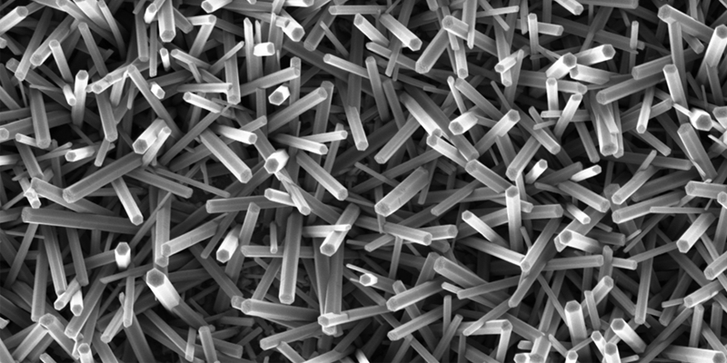

Тепловые свойства нанокристаллов
Высокая теплоемкость
Из-за большого количества поверхности по сравнению с объемом нанокристаллы обладают более высокой
теплоемкостью
по сравнению с макроскопическими твердыми телами.
Повышенная теплопроводность
В некоторых случаях нанокристаллические материалы могут обладать улучшенными теплопроводными свойствами по
сравнению с их макроскопическими аналогами.
Мелтинговая температура
Нанокристаллы могут иметь более низкую температуру плавления, чем их макроскопические аналоги из-за
поверхностного эффекта.
Фазовые переходы
Размеры нанокристаллов могут влиять на их способность к фазовым переходам,поведение при нагревании и
кристаллографические изменения.



Передовые сферы использования тепловых свойств нанокристаллов
Тепловые интерфейсы
Нанокристаллы могут быть использованы в составе тепловых интерфейсов,
которые
применяются для улучшения передачи тепла между различными материалами, такими как
микропроцессоры,
радиаторы или другие тепловые устройства. Их высокая теплопроводность и способность образовывать
плотные
контактные поверхности способствуют более эффективному рассеиванию тепла, что является
критически важным
для предотвращения перегрева и увеличения производительности электронных устройств. Кроме того,
нанокристаллы могут быть использованы в составе термопаст и термопрокладок, что способствует их
применению
в высокотехнологичных областях, таких как аэрокосмическая промышленность и электроника.
Оптика
В оптике нанокристаллы находят применение в
фотолюминесцентных материалах, квантовых точках и лазерах для улучшения источников света и
дисплеев.
Квантовые точки, обладая уникальными оптическими свойствами, могут излучать свет с высокой
яркостью и
чистотой цвета, что делает их идеальными для использования в светодиодах, экранах и дисплеях. В
лазерных
технологиях нанокристаллы позволяют создавать более мощные и стабильные источники света. Также
они находят
применение в солнечных концентраторах, увеличивая эффективность преобразования солнечного света
в
электрическую энергию. Нанокристаллы используются в разработке новых типов линз и оптических
фильтров, что
способствует улучшению качества изображения в микроскопах, камерах и других оптических приборах.
Их
способность изменять свои оптические свойства под воздействием электрического поля делает их
перспективными для использования в технологии дисплеев следующего поколения, таких как гибкие и
прозрачные
экраны.
Нанотехнологии
Нанокристаллы играют важную роль в развитии
нанотехнологий, обеспечивая значительные улучшения в различных областях. Они повышают
эффективность
солнечных элементов за счет увеличения поглощения солнечного света и улучшения процесса
преобразования его
в электрическую энергию. В фотокатализаторах нанокристаллы используются для очистки воды и
воздуха,
эффективно разлагая органические загрязнители под воздействием света. В биосенсорах
нанокристаллы
позволяют создавать высокочувствительные устройства для точного обнаружения биомолекул, что
важно для
ранней диагностики заболеваний. В медицинских технологиях нанокристаллы используются для
целенаправленной
доставки лекарств и улучшения визуализации клеток и тканей. В электронике нанокристаллы
применяются для
разработки новых типов полупроводников и транзисторов, способных работать быстрее и с меньшим
энергопотреблением.